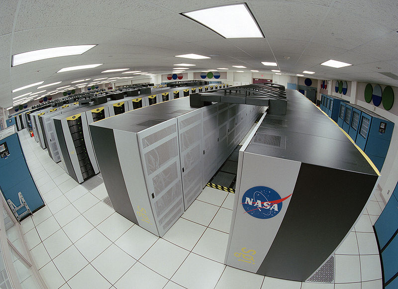

Історія обчислювальної техніки — це літопис прагнення і досягнень людини в створенні швидших, менших та дешевших обчислювальних приладів.
До того, як були запроваджені комп'ютери, більшість обчислень робили люди. Засоби, які допомагали в підрахунку називались обчислювальними машинами, різними пропрієтарними іменами, чи навіть, як і зараз калькуляторами.
 Калькулятори продовжували розвиватися, але комп'ютери додали найважливіший елемент — умовні команди та більше пам'яті, що дозволило автоматизацію як чисельних розрахунків так і взагалі, автоматизації багатьох завдань з обробки текстів. Комп'ютерна технологія зазнавала значні зміни кожні десять років починаючи з 1940 року.
Калькулятори продовжували розвиватися, але комп'ютери додали найважливіший елемент — умовні команди та більше пам'яті, що дозволило автоматизацію як чисельних розрахунків так і взагалі, автоматизації багатьох завдань з обробки текстів. Комп'ютерна технологія зазнавала значні зміни кожні десять років починаючи з 1940 року.
Обчислювальна техніка стала платформою для інших цілей, ніж лише обчислень, таких як автоматизація процесів, електронних засобів зв'язку, контроль обладнання, розваги, освіта та ін. Кожна галузь у свою чергу, запровадила власні вимоги на обладнання, яке і розвивається у відповідь до цих вимог.
Перші комп'ютери вимагали від оператора вводити початкові значення арифметичних операцій, а потім покроково згідно з інструкцією виконувати вручну необхідні дії аби одержати результат.  Зазвичай вирізняють чотири покоління обчислювальної техніки. Швидкий розвиток і розповсюдження комп'ютери одержали починаючи з третього покоління. Під терміном «П'яте покоління ЕОМ» відомий невдалий проект японської держави зі створення комп'ютерів нового типу і підвищеної продуктивності(завершився в 1992 році). Також часто під цим терміном маються на увазі квантові комп'ютери, днк-комп'ютери та інші перспективні, експерементальні обчислювальні технології.